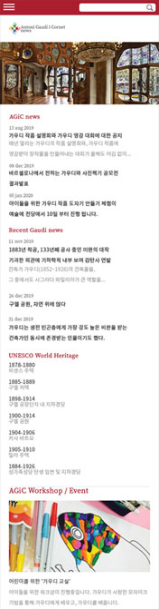
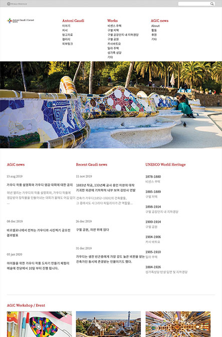
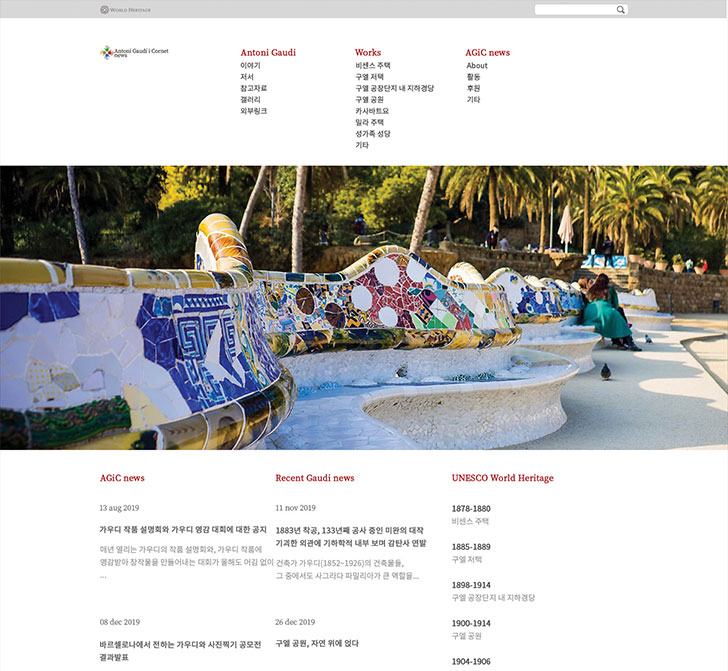

-
View Port : Desktop, Tablet, Mobile
제작 기간 : 약 14시간
-
*모든 포트폴리오는 기획 단계부터 작은 디자인까지 제작 및 편집하여 진행하였음
*제작 기간은 기획부터 디자인, 제작까지의 시간을 의미함
*모든 포트폴리오는 chrome에서 가장 정확하게 감상할 수 있습니다.
-
Antoni Gaudi는 가상으로 만든 사이트로써 로고부터 내용 및 컨셉까지 새로 제작한 반응형 페이지입니다.
반응형까지 활용가능한 슬러이더 플러그인을 사용하여 자동으로 넘어가는 배너와, 모바일에서 내비게이션이 토글버튼으로 바뀌어 더 간편하고 실용적인 디자인을 했습니다.
반응형 사이트 제작을 통해 태블릿과 모바일에 대한 이해를 더 갖게 되었습니다.

- 
- 
- 